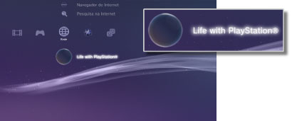

Rede > Life with PlayStation®
Life with PlayStation®
Life with PlayStation® fornece conteúdos dinâmicos baseados na web, organizados em canais exclusivos que podem ser pesquisados por hora e localização. Pode desfrutar de vários tipos de conteúdos seleccionando um canal.
Quando estiver a utilizar Life with PlayStation®, estará automaticamente a participar no projecto Folding@home™, um projecto de informática distribuído, que é gerido pela Universidade de Stanford.
Iniciar o Life with PlayStation®
Para utilizar Life with PlayStation®, tem de transferir primeiro e instalar a aplicação Life with PlayStation®. Seleccione  (Life with PlayStation®) em
(Life with PlayStation®) em  (Rede) para transferir a aplicação. Siga as instruções no ecrã para concluir a instalação.
(Rede) para transferir a aplicação. Siga as instruções no ecrã para concluir a instalação.

Notas
- Para instalar o Life with PlayStation®, são necessários pelo menos 500 MB de espaço livre no disco rígido do sistema PS3™.
- Se o ícone
 (Folding@home™) for apresentado, tem de actualizar primeiro a aplicação Folding@home™ e, em seguida, actualize Life with PlayStation®. Seleccione (Folding@home™) em (Rede) e, em seguida, siga as instruções no ecrã para actualizar a aplicação Folding@home™. Em seguida, seleccione novamente (Folding@home™) em (Rede) e, em seguida, siga as instruções no ecrã para actualizar Life with PlayStation®.
(Folding@home™) for apresentado, tem de actualizar primeiro a aplicação Folding@home™ e, em seguida, actualize Life with PlayStation®. Seleccione (Folding@home™) em (Rede) e, em seguida, siga as instruções no ecrã para actualizar a aplicação Folding@home™. Em seguida, seleccione novamente (Folding@home™) em (Rede) e, em seguida, siga as instruções no ecrã para actualizar Life with PlayStation®.
Sair de Life with PlayStation®
Para sair de Life with PlayStation®, prima o botão PS no controlador sem fios e seleccione  (Sair) em (Rede).
(Sair) em (Rede).
Definir o Auto-arranque
O Life with PlayStation® é iniciado automaticamente se o sistema PS3™ estiver em repouso durante determinado período de tempo. Seleccione (Life with PlayStation®) em (Rede), prima o botão  e, em seguida, seleccione [Auto-arranque do disco] no menu de opções.
e, em seguida, seleccione [Auto-arranque do disco] no menu de opções.
| Desligado | Defina para não iniciar automaticamente o Life with PlayStation®. |
|---|---|
| Após 10 minutos | Inicia o Life with PlayStation® após 10 minutos. |
| Após 20 minutos | Inicia o Life with PlayStation® após 20 minutos. |
| Após 30 minutos | Inicia o Life with PlayStation® após 30 minutos. |
Nota
[Auto-arranque] está desactivado quando o sistema PS3™ não está ligado à Internet.
Eliminar o Life with PlayStation®
O programa Life with PlayStation® pode ser eliminado do disco rígido. Seleccione (Life with PlayStation®) em (Rede), prima o botão e, em seguida, seleccione [Eliminar] no menu de opções.
Nota
Mesmo que o programa seja eliminado, o ícone (Life with PlayStation®) não é apagado do menu XMB™.
Se seleccionar o ícone, o programa Life with PlayStation® é transferido novamente.